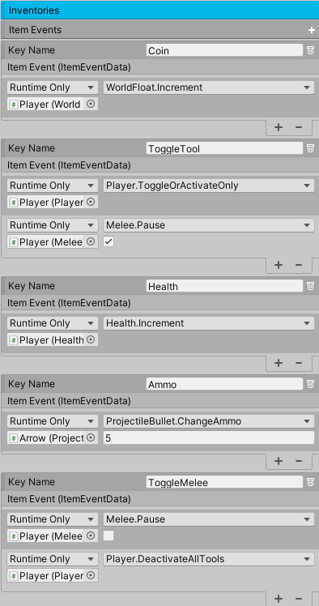

Inventory
The inventory system allows the player to find and store items, provides a customizable user interface for interacting with the items, and automatically restores and saves the items when a scene begins and ends. The system itself relies heavily on Scriptable Objects, which allow for a flexible foundation.
There are five main components: Item, PickUpItems, Inventory, InventorySO, and ItemSO. The player, using PickUpItems, will pick up an Item and add it to InventorySO. The Item is then mapped to an ItemSO, which contains the necessary information to display in the Inventory. From there, the user can pick, move, and use items.
The UI structure in Inventory simply displays the contents of InventorySO. It’s for this reason that multiple inventories can be created to work together. Thus, it’s possible to have an inventory only for firearm items and another for all the items in the system.
InventorySO
This Scriptable Object is the glue that holds the entire inventory system together. Its primary job is to contain a list of all the items, to add and remove items, and to save these items in memory. Each InventorySO must have a unique name for saving purposes. Also, for it to function properly, it must be referenced by at least one Inventory.
It’s possible to have multiple inventories working together, all referencing the same items. To accomplish this, those inventories must reference the same InventorySO, and that’s it.
To create an InventorySO, right click in the project window and go to Create/FlareEngine/InventorySO.
Property |
|
|---|---|
Reference Inventory |
Any item that can potentially exist in the inventory should have its corresponding ItemSO added to the Reference Inventory. The character will not be able to pick up an item if the item’s reference ItemSO is not part of this list. |
Default Items |
Any ItemSO in this list will be immediately inserted into the active inventory. Use this carefully. The system will always try to add these items if they don’t exist in the inventory. For example, if you default a health item, this item will be added each time the inventory lacks one. This is more suitable for non-consumable items, like setting a default firearm. |
Warning
A common source for odd behavior is simply not updating the Reference Inventory each time a new ItemSO is created.
Method |
|
|---|---|
Save( ) |
This will save the inventory in memory. It’s called by OnDisable when the Scene terminates. But you can call this method anytime you wish. You can also use the static method InventorySO.SaveData ( ), which will save all the inventories. The using TwoBitMachines namespace will be required. |
ItemSO
This Scriptable Object is a template for an item the player can pick up. It contains the necessary information and settings for handling the life cycle of the item.
To create an ItemSO, right click in the project window and go to Create/FlareEngine/ItemSO.
Property |
|
|---|---|
Item Name |
The name of the item. This must be unique for identification purposes. |
Key Name |
Once an item in the inventory is used, PickUpItems will use the Key Name to find the correct Unity Event to trigger. |
Icon |
The item’s icon. This sprite will be displayed in the inventory. |
For Inventory |
If AddToInventory is enabled, the item will be added to an inventory. Otherwise, the item will be used immediately. If the item cannot be used immediately (maybe the value has already reached a max value), the system will try to add it to the inventory as a backup measure. |
Droppable |
If No is enabled, the item cannot be dropped from the inventory. If Yes is enabled, it can be dropped, and a prefab of the item can be specified. This prefab will be instantiated in the scene next to the character. If no prefab exists, the item will still be removed from the inventory. |
Consumable |
If enabled, the inventory removes this item when it’s used (think coins or health). Consumables of the same type can be stacked in the inventory. Set the limit of the stack. If the limit is reached, the inventory will simply create another slot item and begin the stacking process again. If this is not enabled, the item will remain in the inventory if used. Think firearms. In this situation, there can only ever be one of these items in the inventory. It wouldn’t make sense to have two of the same firearms. |
Generic Float And String |
The meaning of these values is completely arbitrary. They may not even be necessary at all. Their purpose relies entirely on what the item needs to execute. For example, when a firearm item is used, the corresponding event will simply activate or deactivate the gameobject of the real firearm, never even using these values. If it’s a health item, only the Generic Float is required to specify the amount of health that will be applied to a character. |
Cost |
If the inventory this item belongs to is of type Vendor, this will determine the cost of the item. Also choose whether to keep or remove this item in the inventory upon selling it. |
Item Description |
Describe what the item does. This is displayed in the inventory. |
PickUpItems
Attach this component to a character. Upon contact with an item, this will deactivate the item and add it into the inventory. If this item is not a consumable, and it already exists in the inventory, the system will ignore it.
Property |
|
|---|---|
Inventories |
Set a reference for each Inventory the character is using. PickUpItems will initialize these inventories during Awake for proper function. |
Item Events |
Each item has a Key Name (found in ItemSO) which belongs to a corresponding Item Event. When an item is used, the system will find and trigger the correct Item Event and execute the intended purpose of the item. This Event is invoked with the argument ItemEventData, which is a class that contains the item’s generic values and a success boolean. Any method called by Item Events must have ItemEventData as a parameter. |
Is Vendor |
If enabled, this means the inventory does not belong to the player. The player must purchase items from this inventory using money. Money is represented by a WorldFloat component, which can represent coins. Coins will typically be items the player must collect in the game world. Set the references to the player’s transform, which will be used to retrieve the player’s PickUpItems component, and a WorldFloat, which will be used to buy items. There are two events - one for a successful transaction and one for a failed transaction (not enough money). The vendor can be controlled by the AI system to trigger the inventory UI menu. |
Mouse Pick Up |
If enabled, the user can add items into the inventory by clicking on them. Specify the layer where the items exist. |
It’s important to realize the values in ItemEventData are set internally. The only value to be concerned with, if implementing your own methods, is to set itemEventData.success to True or False so the inventory system can properly handle the item once it’s used. If the success value is not set, the system will assume a value of True. Let’s look at some examples of Item Event.
If you want to use a health item, connect the Item Event to the Health Component and choose the Dynamic method Increment. That’s it. Internally, the system will use the item’s generic float value to increase the health. If the Increment method succeeds, it will set itemEventData.success to true. If set to false, the system will interpret the event as a failure and retain the health item in the inventory.
Very similarly, if you want to use a firearm item, connect the Item Event to the Player Component and choose the Dynamic method ToggleOrActivateOnly. That’s it. Internally, the system will try to toggle the active state of the firearm gameObject and turn off all other firearms (if any). This method will automatically set itemEventData.success to true, since in this case the item is not a consumable. The other values of ItemEventData are not used.
If you want to change the projectile of a firearm using an item, connect the Item Event to the Player and choose the Dynamic method ChangeFirearmProjectile. For this to work, the Firearm component must contain a ProjectileInventory (which contains a list of projectiles). This method will use the generic string value, which specifies the name of the new projectile. The system will then set ItemEventData.success to true if it succeeded in changing the projectile. It’s important to note this method will change the projectile of the first active firearm the system finds. If you want a more specific approach, instead of using Player, use the Firearm component.
To increase a projectile’s ammo using an item, connect the Item Event to a ProjectileInventory and choose the Dynamic method ChangeProjectileAmmo. In this case, the itemEventData will use both generic values. It will use the generic string to specify the name of the projectile it wants to modify, and it will use the generic float value to change the ammo amount.
Item
Attach this component to any gameobject that is an item. This item will become part of the inventory (and its gameobject will be deactivated) when a character makes contact with it. Attach a Circle Collider2D and set the isTrigger to true. Each item must correspond to an ItemSO.
Property |
|
|---|---|
Type |
If Item, the item will be used by the Inventory system. If Tool, the item is a tool and will be made a child of the character. If Tool Swap, the character will swap tools with the current and new tool. The old tool will no longer be a child of the character. This is useful for picking up firearms. |
ItemSO |
The reference to ItemSO. |
Inventory
The Inventory contains the UI structure. Place this component on a Canvas gameobject. The slots (item containers) and accompanying features can be arranged however you deem necessary. You can arrange the slots in a grid, in a vertical or horizontal bar, or you can have just one slot. It’s completely up to you.
Slots are the most important elements of the Inventory. Everything else is optional. Each slot must contain the InventorySlot component.
Property |
|
|---|---|
InventorySO |
The reference to InventorySO. |
View Items |
If All is enabled, all the items in the inventory will be displayed in this inventory. If Key Name is enabled, only items with the specified Key Name will be shown. This can be great for creating an inventory that only contains firearms. |
Navigation |
If Unity Navigation is enabled, the keyboard/mouse will be the primary method for navigating the slots. Remember to set Send Navigation Events (in Event System) to true, and any UI Button not part of the system should have its Navigation set to None. This setting is more appropriate for slots arranged in a grid. If set to Manual, buttons will be used to move the items across the slots. Use this option if the slots are arranged in a bar. |
Property |
|
|---|---|
Left, right |
The buttons for moving the items left and right, or up and down, depending on the layout of the slots. |
Auto Item Load |
If enabled, the item in the first slot will be used automatically. |
Toggle Inventory |
A button for toggling the active state of the Inventory gameobject. If no button is desired, set to None. If the button exists, specify if the game should pause when the Inventory is activated. Pausing the game will also block player input. If Block Player Input is enabled, only the player input will be paused when the inventory is open. |
Use Item - Slots |
If OnSlotSelection is enabled, when the user clicks or presses a slot, the item will be used immediately. If not enabled, the item is only selected but not used. |
Use Item |
A button for using items. If Navigation is set to Unity Navigation, the selected item will be used if this button is pressed. If Navigation is set to Manual, then the item in the first slot will be used. If no button is desired, set to None. |
Blocked By |
If any referenced inventory in this list is already open, it will prevent this inventory from opening. This will only work if trying to open this inventory with the toggle inventory button. |
UI references are all optional and can be placed wherever necessary. If used, the system will be in charge of setting and enabling them when appropriate.
Property |
|
|---|---|
Item Name |
The TextMeshPro displaying the name of the selected item. |
Item Selected |
The UI Image displaying the icon of the selected item. |
Item Description |
The TextMeshPro displaying the description of the selected item. |
Item Cost |
The TextMeshPro displaying the cost of the selected item. This is used for an inventory that is of type vendor. |
Current Item |
The UI Image displaying the icon of the current non-consumable item. This UI Image usually exists outside the inventory to remind the player of the current item. |
Drag Item |
The UI Image with a DragItem Component. If it exists, it will allow items to be dragged and swapped over slots. The item’s icon will appear next to the mouse as the item is being dragged. If the slots are using a Unity Grid Layout, attach a Layout Element component to this gameobject and set IgnoreLayout to true. This will allow the UI Image to move freely. |
Remove Item |
The UI button reference for removing items. If an item can be dropped, this element will become visible. |
Select Frame |
The UI Image that will automatically move to the selected slot and highlight it. The speed specifies how quickly it moves to a new slot. If set to zero, the image will be instantly moved. |
Refresh Slots |
This button must be pressed each time inventory slots are added or removed from the UI structure. |
Delete Slots |
For testing. If pressed, this will delete all the saved data in the inventory. |
Events |
|
|---|---|
OnOpen |
The Unity Event invoked when the inventory is opened. |
OnClose |
The Unity Event invoked when the inventory is closed. |
OnMove |
The Unity Event invoked when the user clicks a new slot. |
OnUseItem |
The Unity Event invoked when an item is used. |
OnRemoveItem |
The Unity Event invoked when an item is removed. |
Method |
|
|---|---|
MoveLeftUp ( ) |
Move the items left or up. |
MoveRightDown ( ) |
Move the items right or down |
UseSelectedGridItem ( ) |
Use the currently selected grid item. |
RemoveSelectedGridItem ( ) |
Remove the currently selected grid item if it’s droppable. |
InventorySlot
Inventory Slot is used by Inventory for displaying items. Each slot requires this component. The demo includes the proper setup, including connections for dragging and swapping items.
Property |
|
|---|---|
Image Icon |
Displays the item’s icon. |
Image Drop (Optional) |
If the UI Image exists, it will be enabled on item’s that are droppable. The button belonging to this image should call the DropItem method to drop the item back into the scene. |
Text Mesh (Optional) |
If the TextMeshPro exists, it will display the item’s stack count if the item is a consumable. |
Method |
|
|---|---|
UseItem ( ) |
Use the item in this slot. |
DropItem ( ) |
This will instantiate the item in this slot back into the scene next to the character. |